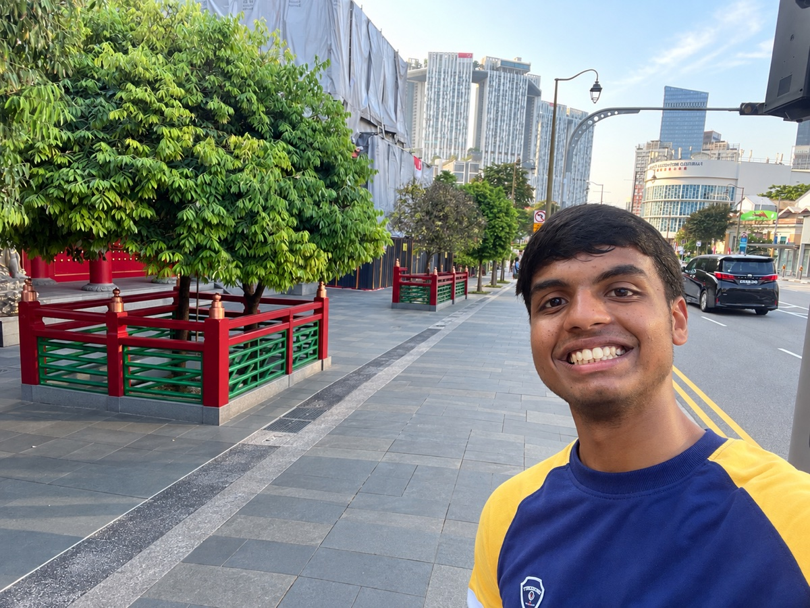
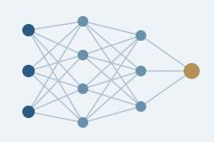
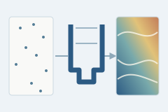
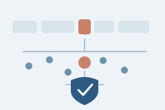
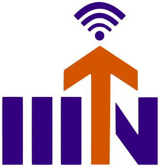
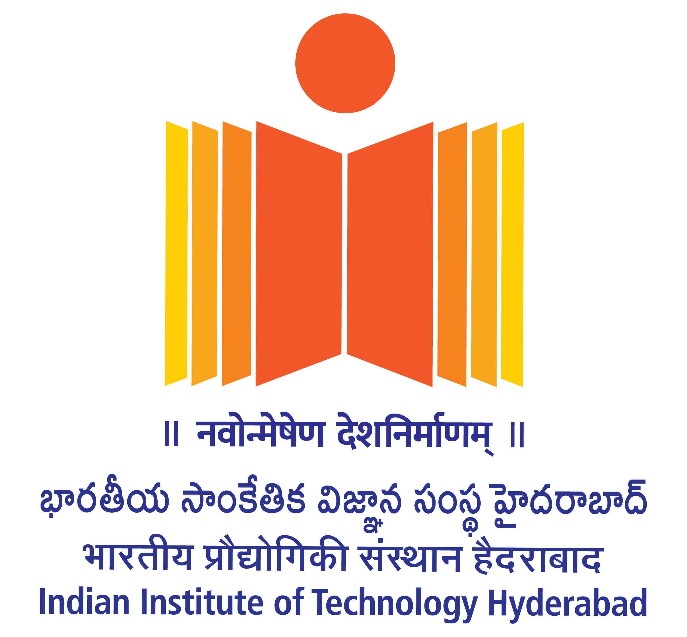

July 2026 – present
Visiting Student
Singapore University of Technology and Design · Singapore
Working with Prof. Ezekiel Soremekun on jailbreaks in code LLMs, studying embeddings and internal activations to understand and defend against them.
I am a final-year Data Science undergraduate at the Indian Institute of Information Technology Nagpur, advised by Prof. Jitendra Tembhurne. I am currently a visiting student at the Singapore University of Technology and Design under Prof. Ezekiel Soremekun. At Nanyang Technological University, I work on hallucination mitigation strategies in medical LLMs under Prof. Erik Cambria.

I started in computer vision, trying to understand what happens when a model sees many examples of some classes and very few of others. The familiar result was that it favored the common classes. I explored ways to adjust its decisions and training so that rare classes would not be overlooked, but I kept coming back to a deeper question: what had the model learned about those classes in its feature space?
That question led me to neural collapse and the geometry of learned representations. Late in training, features can gather around class means while classifier weights align with those means. Under imbalance, rare classes can still sit too close to visually similar neighbors. We used the angles between normalized classifier prototypes to measure this semantic crowdedness and brought that signal into logit adjustment alongside class frequency. Seeing how much could be learned from the shape of a feature space made me want to look inside other models, too.
I then had the chance to work on LLM safety. With code language models, I began investigating how jailbreak prompts affect embeddings and hidden activations, and whether those internal changes can help us understand and defend against them. In medical LLMs, I am now exploring strategies to mitigate hallucinations, where a fluent answer can still be unsupported or misleading. The thread through all of this work is my interest in using a model’s internal behavior to understand its failures and make its outputs more dependable.

A configurable feedforward network built with the C++ standard library. It trains with ReLU activations, backpropagation, and gradient descent for regression on housing data.

A U-Net predicts three strain components from microscopic speckle images. A masked loss lets it learn from the small fraction of pixels with valid measurements.

An extension of ONION that studies leave-one-out embedding shifts and early-layer signals to identify textual backdoor triggers.
Singapore University of Technology and Design · Singapore
Working with Prof. Ezekiel Soremekun on jailbreaks in code LLMs, studying embeddings and internal activations to understand and defend against them.
Nanyang Technological University · Singapore
Working with Prof. Erik Cambria on hallucination mitigation strategies in medical LLMs.
Nvtha AI · Singapore
Contributing to hallucination detection research using representation-based signals, evaluation, and failure analysis for LLM workflows.

Indian Institute of Information Technology Nagpur · India
Worked with Prof. Jitendra Tembhurne on logit adjustment methods to handle imbalanced datasets.

Indian Institute of Technology Hyderabad · India
Worked with Prof. Sidhardh on a U-Net model to predict strain maps from experimental images and automate crack-tip localization.